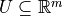
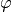
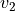
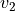
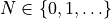
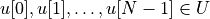

9. Additional Problem Formulations¶
9.1. Discrete-time linear with disturbances¶
E.g., described in [FDLOM16], [WTOXM11], [W10].
9.1.1. Problem description¶
9.1.1.1. System model¶
Consider a system model S with a set V = S U E of variables where S and E are disjoint sets that represent, respectively, the set of plant variables that are regulated by the planner-controller subsystem and the set of environment variables whose values may change arbitrarily throughout an execution.
The domain of V is given by dom(V) = dom(S) x dom(E) and a state of the system can be written as v = (s, e) where
Call s the controlled state and e the environment state.
Assume that the controlled state evolves according to the following discrete-time linear time-invariant state space model: for
where  is the set of admissible control inputs,
 is the set of exogenous disturbances and
and are the controlled state, the control signal,
and the exogenous disturbance, respectively, at time t.
is the set of exogenous disturbances and
and are the controlled state, the control signal,
and the exogenous disturbance, respectively, at time t.
9.1.1.2. System specification¶
The system specification  consists of the following components:
the assumption
 on the initial condition of the system,
on the initial condition of the system,the assumption
 on the environment, and
on the environment, andthe desired behavior
 of the system.
of the system.
Specifically, can be written as
In general, is a conjunction of safety, guarantee,
obligation, progress, response and stability properties; is a propositional formula; and is a conjunction of safety and justice formula.
9.1.1.3. Planner-Controller Synthesis Problem¶
Given the system model S and the system specification synthesize a planner-controller subsystem that generates a sequence of control signals to the plant to ensure that starting from any initial condition, is satisfied for any sequence of exogenous disturbances and any sequence of environment states.
9.1.2. Solution strategy¶
We follow a hierarchical approach to attack the Planner-Controller Synthesis Problem:
Construct a finite transition system D (e.g. a Kripke structure) that serves as an abstract model of S (which typically has infinitely many states);
To construct a finite transition system D from the physical model S, we first partition dom(S) and dom(E) into finite sets and , respectively, of equivalence classes or cells such that the partition is proposition preserving. Roughly speaking, a partition is said to be proposition preserving if for any atomic proposition
 and any states and  that belong to the same cell in the partition, satisfies if and only if also satisfies Denote the resulting discrete domain of the system by
and any states and  that belong to the same cell in the partition, satisfies if and only if also satisfies Denote the resulting discrete domain of the system by The transitions of D are determined based on the following notion of finite time reachability. Let be a set of discrete controlled states. Define a map that sends a continuous controlled state to a discrete controlled state of its equivalence class.
A discrete state is said to be reachable from a discrete state only if starting from any point there exists a horizon length  and a sequence of control signals  that takes the system to a point satisfying the constraint for any sequence of exogenous disturbances In general, for two discrete states, establishing the reachability relation is hard because it requires seaching for a proper horizon length In the restricted case where the horizon length is prespecified and are polyhedral sets, one can establish the reachability relation by solving a affine feasibility problem equivalent to computing the projection of a polytope on to a lower dimensional coordinate aligned subspace.
Synthesize a discrete planner that computes a discrete plan satisfying the specification based on the abstract, finite-state model D;
Design a continuous controller that implements the discrete plan.